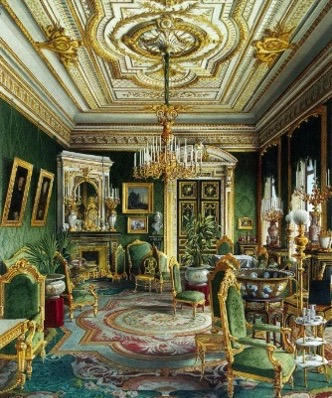
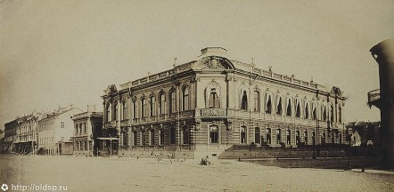
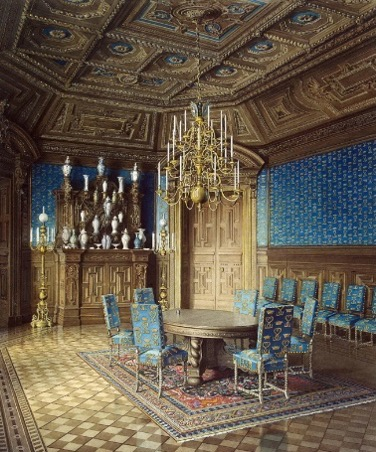

Иван Ильинский
Первое упоминание об участке встречается в переписи населения 1737 года. Тогда земля принадлежала капитану-поручику Федору Фирсову. В начале XIX в. Участок, где сейчас располагается здание университета, принадлежал представителям семейства Строгановых. В 1857 году владельцем стал П. С. Строганов, и в том же году началось возведение двухэтажного особняка по проекту архитектора И. А. Монигетти. В 1877 сделали пристройку в три окна для домовой церкви. Позже были надстроены еще два этажа, отделаны они гораздо скромнее.После смерти П. С. Строганова особняк унаследовал его внучатый племянник князь Г. А. Щербатов.

Внутреннее убранство здания очень красивое, многое напоминает о прежних хозяевах здания. “Сердцем” дома являлся “дубовый зал”, оформленный в стиле фламандского барокко. В зале при Строгановых находилась столовая. Из нее можно было попасть в красиво оформленную Зеленую гостиную. Стены особняка были украшены картинами Ватто, Филиппо Липпи и других знаменитых художников.

В советское время в особняке размещались различные учреждения:
1930-е гг. - Центральный музыкальный техникум,
1950-х - Электромеханический техникум Трамвайно-троллейбусного управления,
нач. 1960-х - Радиотехнический техникум,
1970-1990-е гг. – Техникум, впоследствии колледж морского приборостроения,
В настоящее время в здании располагается один из корпусов Университета ИТМО. Здесь находится факультет технологического менеджмента и инноваций.

270